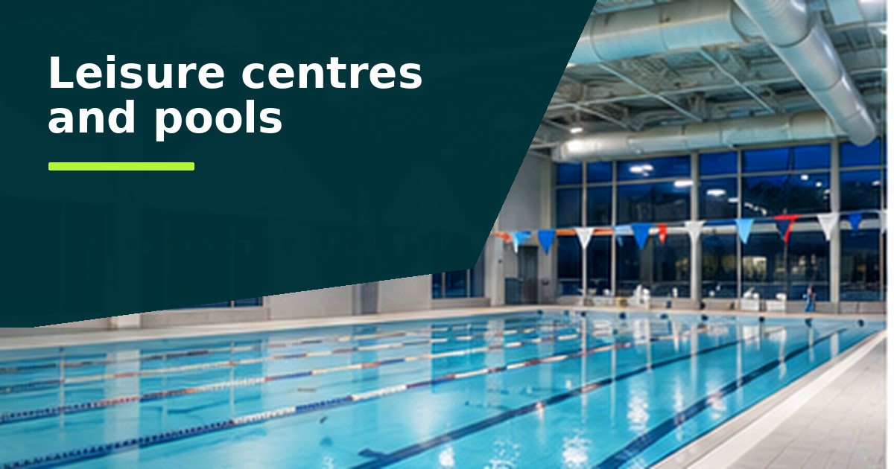
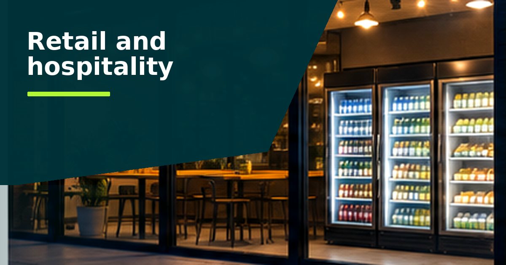

What to look for in your sector
Every building type has its own normal. Choose yours for the patterns worth checking first.
Schools and colleges
Schools are closed for around 13 weeks a year, so holidays and weekends should look almost flat. When they don't, there's usually a schedule to fix.
Read moreOffices and council buildings
Office demand should fall sharply when people go home. The interesting part is everything that doesn't.
Read more
Leisure centres and pools
Long opening hours and pools that run around the clock make leisure centres high users. The question is what the overnight floor is made of.
Read moreHealthcare
Hospitals and many care settings run 24/7, so out-of-hours use isn't the right question. Day against night, and peaks against capacity, are.
Read moreIndustrial and warehouses
Shift patterns make the calendar the most important setting. Get it right and shutdowns, compressed air and refrigeration show up clearly.
Read more
Retail and hospitality
Fixed trading hours make out-of-hours use easy to see. Refrigeration, signage and kitchen equipment are the usual suspects.
Read moreCheck your own sites
Load several meters at once and the analyser ranks them, so you know where to start.